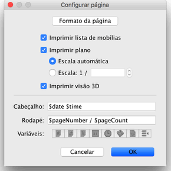
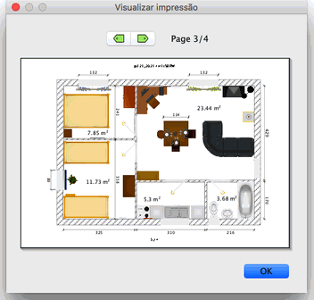

|
|
Imprimindo uma casa | ||
|
Para imprimir uma casa, escolha Arquivo > Imprimir....
Normalmente, Sweet Home 3D imprime a lista de mob�lias, o plano e a vis�o 3D atual de
uma casa 3D, usando o tamanho do papel, margens e orienta��o normal.  Na janela de configura��o da p�gina, voc� pode modificar o tamanho do papel ou orienta��o clicando no bot�o Formatar p�gina. Voc� pode tamb�m escolher se a lista de mob�lias, o plano e a vis�o 3D devem ser impressas ou n�o. Para visualizar a configura��o de sua p�gina, escolha Arquivo > Visualizar impress�o....  Na janela de visualiza��o de impress�o, voc� pode ver como a casa ser� impressa, p�gina a p�gina. Para modificar a p�gina visualizada, clique nas setas na parte superior da tela ou pressione as setas do teclado. |
|